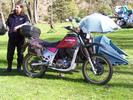
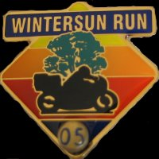
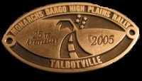

(I'm fairly horrified to discover that people have actually read this
page, sometimes more than once. Now I'm too shy to actually write
anything!)
Dargo High Plains Rally 1999 |
My first ever rally. Loosely organized by the unredoubtable
Monarchs,
and held at Talbotville, the site of an old goldrush town
and now just an empty clearing by the river.
Sadly, while exploring coastal Gippsland, the XLV
shat fourth gear, and I had to limp her home in 3rd
and 5th. Due to work and incompetent mechanics, the
repair took over a year to complete and I ended up
missing Dargo 2000.
|
|---|
|
Dargo High Plains Rally 2001 |
2001 saw me heading off to Dargo again, this time
skipping the worst of the Gippsland flat by detouring
via Noojee. Along the way, Stu gets a flat tyre,
SOC's KTM starts leaking oil and just as the sun begins
to set the XLV burns out its 12V wiring, runs down its
battery and the bike fails to proceed. Fortunately, it
rolls to a halt just at the gate of
Wonangatta Caravan Park, which supplies us with
beer, accomodation and a garage to fix the bike in the
next morning.
|
|
Cold Flame 2002 |
SOC and Irene sleep on the ground, Hammo sleeps hanging
from a tree, home via Jindabyne, Thredbo and Tintaldra Pub.
Definitely got to go to this one again some time.
|
|
Dargo High Plains Rally 2002 |
The curse of Dargo strikes again! BT wins "longest
distance" by the simple expedient of
riding around Australia on the way there.
SOC seizes his KTM and refuses to talk to me because
I ride a Honda.
I'm pretty sure this is the year Liam comes along
an catches a heap of trout in the river. Well worth
it, and we cook them in alfoil in the fire with a
squeeze of lemon.
|
|
Toy Run 2002 |
to Williamstown, for a good cause.
Hopefully the pathetic factional infighting of Toy Run 2004
will resolve itself for 2005 ...
|
|
Karuah River Rally 2003 |
3000km. 4 days. Roughly my bodyweight in beer. Chasing
McArgle crosscountry most of the way home. Oh my.
Sign me up for next year ...
I'll hopefully put a map together of the routes we
took for this some time soon, with a bit of help
from McArgle!
|
|
Autumn Leaf 2003 |
Rather calmer ride, rather less serene rally, but my
first ever rally award -- "Longest Distance Chookie".
Hey, I got free tequila for breakfast!
|
|
TTT 2003 |
My plans all fall to pieces and I can't actually get
to the rally, but I meet up with the usual suspects
to ride up to Tintaldra for the night. They proceed
to TTT, and I come back home and sulk.
|
|

Dargo High Plains Rally 2003 |
"I wonder what the poor people are doing?"
This year everything goes to plan, except for my
new 2-1 exhaust boiling the fuel in the fuel
filter every now and then. Ooops. I make it in
for Friday night this year, wrap the fuel line
in a beer can and spend a very relaxing Saturday
by the river ... the other XLV
owners spend Friday night at Woods Point and
spend Saturday slogging in overland ... takes
all types!
Friday night is beautiful, Saturday morning warm
and sunny, but just as the others arrive from their
adventure the clouds come over and it starts to rain.
Then snow. The offroadisti get the last laugh, as
they've fitted knobby tyres and the going is a bit
easier for them on their way out.
 photo by Simon Ward
|
|
 |
Due to work and some igntion problems with the
XLV, I've missed Confusion, Karuah, Cold Flame, Autumn Leaf
and the Tintaldra Hotel 15th Anniversary. Bummer.
|
|
Hicks' Rally 2004 |
The Monarchs again, in awfully civilized surroundings.
Hickinbotham's Winery, Mornington Peninsula. Piss-elegant
badge and all. Despite
the lure of a "shortest distance" trophy, Stuey,
Phil and I work out a 200km trip to get there via the
usual escapades, and heading out for the
first proper ride since I put the XLV back on the
road feels GOOD! Ten foot bonfires, the man with
one leg longer than the other, confessions of an
(almost) rally virgin, the "photography only by
appointment" sidecar, classic. Not feeling so well
the next morning though!
|
|
Wintersun Run 2004 |
It's a long way from Melbourne to Mildura, and it's even
further from Ouyen to Mildura in the middle of the night
when your carbs are full of water and you can't get over
60. But still, we made it :-).
There's some
photos by Marty H, and
photos by Moike and allegedly some
photos by the Happy Drunk and even
a photo by Nev.
And aus.motorcycles won Best Club Attendance despite not, as such, existing.
Sadly, when I got home and pulled the engine apart to investigate
the odd clunking noises, I found a sump full of metal and a
missing output shaft bearing
.
|
|
Dargo High Plains Rally 2004 |
My first rally on the R100GS ...
photos are up
|
|
|
I've piked out of so many rallies this year it's just not
funny. Karuah, Cold Flame, Dingo Creek, Autumn Leaf, Unaugural, Hicks. I think that's all of them.
|
|

Wintersun Run 2005 |
Finally, I actually get around to turning up to something.
Geez but it's a long way to Mildura, especially if you go via
Wodonga, and especially if Hammo makes you drink lots of beer.
And you get a puncture. And the weather is crap. And the
Moulamein pub is open. Still, I did get to spend a very
pleasant afternoon by the Murray ...
Some fairly ordinary photos are up
... but I'm heading to the Alpine for 2006 instead.
|
|

Dargo High Plains Rally 2005 |
Snow is predicted. Mud occurs. A good time is had by all ...
I miss out on youngest bike+rider by about 20 years when some
20something on a new bike turns up! Who'd have thunk it?
|
|
Trout Rally 2005 |
'burra -> Yea -> Mansfield -> Whitfield -> Lake Buffalo ->
Myrtleford -> Mudgegonga -> Dederang -> Gundowring -> Tallagatta ->
Granya -> Tintaldra -> Tooma -> Clarke's Hill -> Cabramurra ->
Three Mile Dam -> Cabramurra -> Corryong -> Kergunya -> Dederang ->
Mudgegonga -> Myrtleford -> Lake Buffalo -> "DRY ROAD ONLY" ->
Whitfield -> Mansfield -> Yea -> 'burra!
Mediocre Photos here.
|
|
 |
I've missed an awful lot of rallies, mostly due to the arrival
of the excessively cute Charlotte Grace!
Notable last-minute
pikes: Alpine and Hat |
| Dargo High Plains Rally 2006 |
Pissing rain, greasy mud, a certain amount of falling off.
But at least we made it!
Photos on ADVrider
MartyH's Photos
My photos
|
{kind=link}
{kind=link}
{kind=link}
{kind=link}